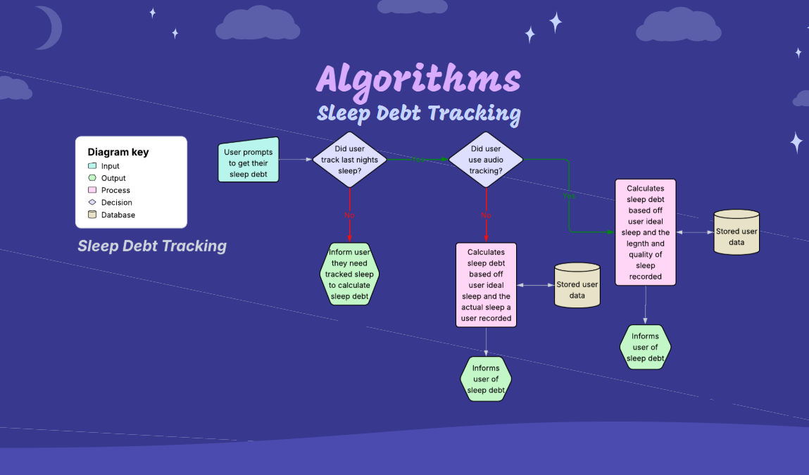
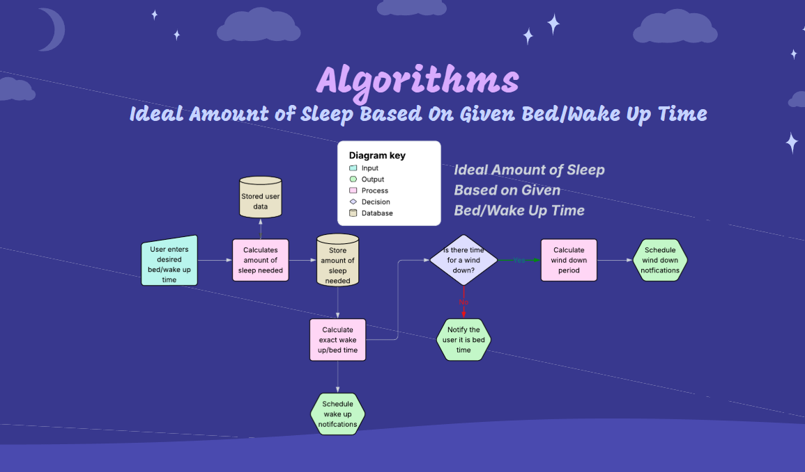
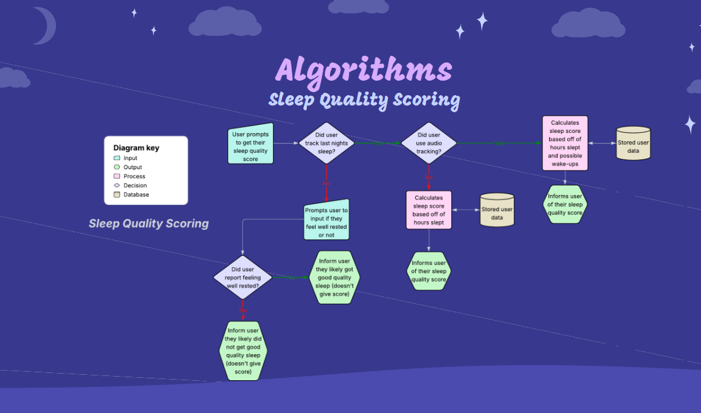
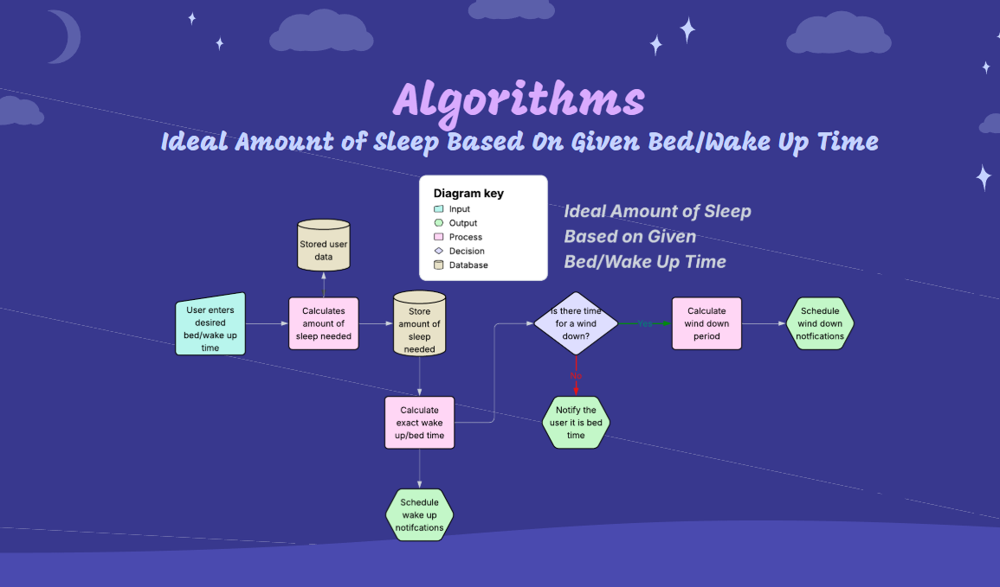
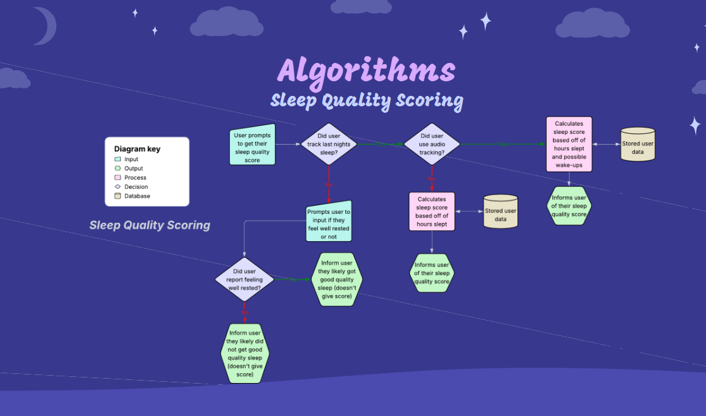

Algorithm
Diagram depicts how Sleep Debt is calculated.
Diagram depicts how the Ideal Sleep is calculated.
Diagram depicts how Sleep Quality is calculated.
Diagram depicts how Sleep Debt is calculated.
Diagram depicts how the Ideal Sleep is calculated.
Diagram depicts how Sleep Quality is calculated.